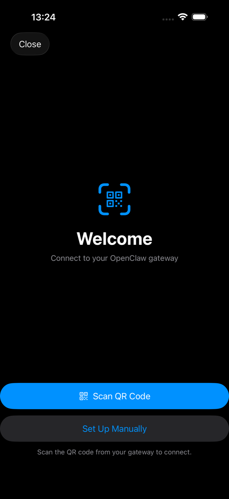
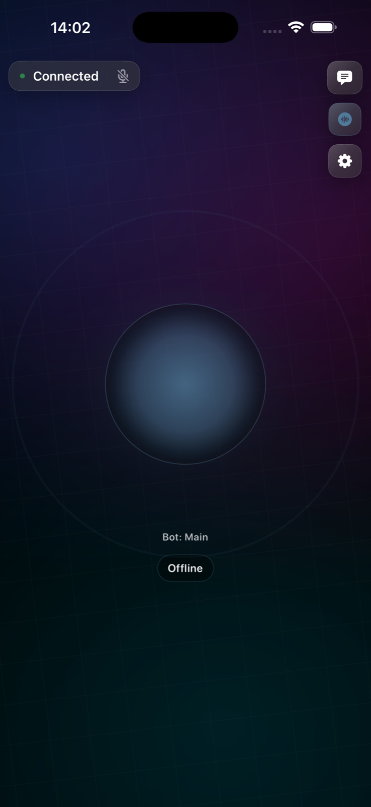

Apple-native correction companion
VeriClaw 爪印
Close the loop on bot drift.
Turn hallucination, disobedience, and role drift into evidence,
diagnosis, intervention, verification, and casebook learning.
Evidence-first
Catch the moment
Role-aware
Diagnose the drift
Verification
Prove the fix held



Companion for OpenClaw
Native correction surface, not another generic dashboard.